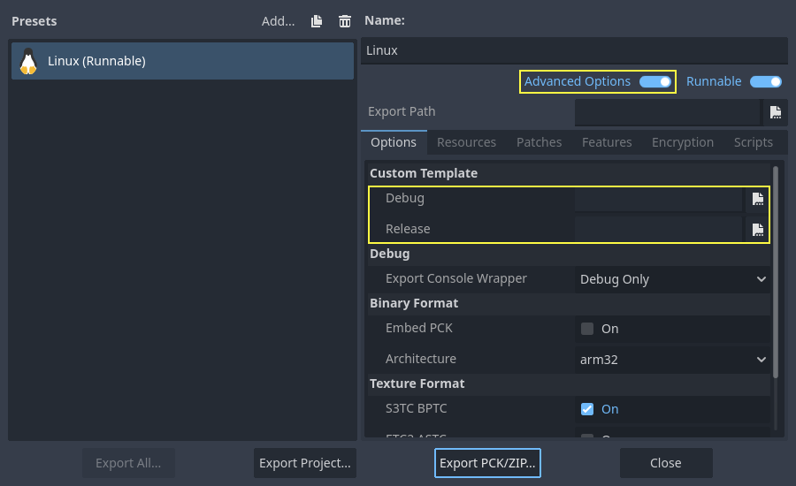

Biên dịch cho Linux, *BSD
Xem thêm
Trang này mô tả cách biên dịch các binary trình chỉnh sửa và export template cho Linux từ mã nguồn. Nếu bạn muốn xuất dự án sang Linux, hãy đọc Xuất cho Linux.
Yêu cầu
Để biên dịch trên Linux hoặc các biến thể Unix khác, bạn cần những thứ sau:
GCC 9+ hoặc Clang 6+.
Hệ thống build SCons 4.4+.
pkg-config (dùng để phát hiện các thư viện phát triển được liệt kê bên dưới).
Thư viện phát triển:
X11, Xcursor, Xinerama, Xi và XRandR.
Wayland và wayland-scanner.
Mesa.
ALSA.
PulseAudio.
Tùy chọn - libudev (build với
udev=yes).
Xem thêm
Để lấy mã nguồn Godot cho việc biên dịch, xem Lấy mã nguồn.
Để có cái nhìn tổng quan về cách dùng SCons cho Godot, xem Giới thiệu về hệ thống build.
Lệnh một dòng cho từng bản phân phối
apk add \
scons \
pkgconf \
gcc \
g++ \
libx11-dev \
libxcursor-dev \
libxinerama-dev \
libxi-dev \
libxrandr-dev \
mesa-dev \
eudev-dev \
alsa-lib-dev \
pulseaudio-dev
pacman -Sy --noconfirm --needed \
scons \
pkgconf \
gcc \
libxcursor \
libxinerama \
libxi \
libxrandr \
wayland-utils \
mesa \
glu \
libglvnd \
alsa-lib \
pulseaudio
sudo apt-get update
sudo apt-get install -y \
build-essential \
scons \
pkg-config \
libx11-dev \
libxcursor-dev \
libxinerama-dev \
libgl1-mesa-dev \
libglu1-mesa-dev \
libasound2-dev \
libpulse-dev \
libudev-dev \
libxi-dev \
libxrandr-dev \
libwayland-dev
sudo dnf install -y \
scons \
pkgconfig \
gcc-c++ \
libstdc++-static \
wayland-devel
pkg install -y \
devel/scons \
pkgconf \
xorg-libraries \
libXcursor \
libXrandr \
libXi \
xorgproto \
libGLU \
alsa-lib \
pulseaudio \
wayland
emerge --sync
emerge -an \
dev-build/scons \
x11-libs/libX11 \
x11-libs/libXcursor \
x11-libs/libXinerama \
x11-libs/libXi \
dev-util/wayland-scanner \
media-libs/mesa \
media-libs/glu \
media-libs/alsa-lib \
media-sound/pulseaudio
sudo urpmi --auto \
scons \
task-c++-devel \
wayland-devel \
"pkgconfig(alsa)" \
"pkgconfig(glu)" \
"pkgconfig(libpulse)" \
"pkgconfig(udev)" \
"pkgconfig(x11)" \
"pkgconfig(xcursor)" \
"pkgconfig(xinerama)" \
"pkgconfig(xi)" \
"pkgconfig(xrandr)"
pkg_add pkgin
pkgin -y install \
pkg-config \
py313-scons \
wayland \
pulseaudio
pkg_add -I \
scons \
wayland \
pulseaudio
sudo apt update
sudo apt install -y \
python3-pip \
build-essential \
pkg-config \
libx11-dev \
libxcursor-dev \
libxinerama-dev \
libgl1-mesa-dev \
libglu1-mesa-dev \
libasound2-dev \
libpulse-dev \
libudev-dev \
libxi-dev \
libxrandr-dev \
libwayland-dev
sudo pip install scons
sudo zypper install -y \
scons \
pkgconfig \
libX11-devel \
libXcursor-devel \
libXrandr-devel \
libXinerama-devel \
libXi-devel \
wayland-devel \
Mesa-libGL-devel \
alsa-devel \
libpulse-devel \
libudev-devel \
gcc-c++ \
libGLU1
eopkg install -y \
-c system.devel \
scons \
libxcursor-devel \
libxinerama-devel \
libxi-devel \
libxrandr-devel \
wayland-devel \
mesalib-devel \
libglu \
alsa-lib-devel \
pulseaudio-devel
Biên dịch
Mở terminal, đi tới thư mục gốc của mã nguồn engine và gõ:
scons platform=linuxbsd
Ghi chú
Trước Godot 4.0, target Linux/*BSD có tên là x11 thay vì linuxbsd. Nếu bạn muốn biên dịch Godot 3.x, hãy dùng nhánh 3.x của tài liệu này.
Mẹo
Nếu bạn biên dịch Godot để thay đổi hoặc đóng góp cho engine, bạn có thể muốn dùng các tùy chọn SCons dev_build=yes hoặc dev_mode=yes. Xem Các alias cho development và production để biết thêm thông tin.
Nếu mọi thứ suôn sẻ, file thực thi binary kết quả sẽ được đặt trong thư mục con "bin". File thực thi này chứa toàn bộ engine và chạy mà không cần bất kỳ phụ thuộc nào. Chạy nó sẽ mở Project Manager.
Ghi chú
Nếu bạn muốn biên dịch bằng Clang thay vì GCC, hãy dùng lệnh sau:
scons platform=linuxbsd use_llvm=yes
Dùng Clang dường như là bắt buộc với OpenBSD, nếu không font sẽ không build được. Với các thiết bị kiến trúc RISC-V, hãy dùng trình biên dịch Clang thay vì GCC.
Ghi chú
Biên dịch trên một số nền tảng như OpenBSD có thể cần nhiều bộ nhớ hơn mức mặc định. Để tăng giới hạn bộ nhớ trên OpenBSD trong phạm vi tối đa của người dùng hiện tại, hãy chạy ulimit -d {new amount in kB}.
Mẹo
Nếu bạn biên dịch Godot để dùng cho production, bạn có thể làm file thực thi cuối cùng nhỏ hơn và nhanh hơn bằng cách thêm tùy chọn SCons production=yes. Tùy chọn này bật thêm các tối ưu hóa của trình biên dịch và tối ưu hóa lúc liên kết (link-time optimization).
LTO mất khá nhiều thời gian và cần khoảng 7 GB RAM trống khi biên dịch. Nếu bạn bị thiếu bộ nhớ với tùy chọn trên, hãy dùng production=yes lto=none hoặc production=yes lto=thin để có một dạng LTO nhẹ hơn nhưng kém hiệu quả hơn.
Ghi chú
Nếu bạn muốn dùng cài đặt trình chỉnh sửa riêng cho các bản build Godot của mình và các bản phát hành chính thức, bạn có thể bật Chế độ tự chứa (self-contained) bằng cách tạo một file tên ._sc_ hoặc _sc_ trong thư mục bin/.
Biên dịch với hỗ trợ AccessKit
AccessKit cung cấp hỗ trợ cho trình đọc màn hình.
Theo mặc định, Godot được build với AccessKit liên kết động. Bạn có thể dùng nó bằng cách đặt accesskit.so cạnh file thực thi.
Ghi chú
Bạn cũng có thể dùng AccessKit liên kết động với export template: đổi tên file SO thành accesskit.{architecture}.so và đặt chúng cạnh các file thực thi export template, các thư viện sẽ được tự động sao chép trong quá trình xuất.
Để biên dịch Godot với AccessKit liên kết tĩnh:
Tải các thư viện tĩnh dựng sẵn từ thư viện godot-accesskit-c-static và giải nén chúng.
Khi build Godot, hãy thêm
accesskit_sdk_path={path}để chỉ cho SCons nơi tìm các thư viện AccessKit:scons platform=linuxbsd accesskit_sdk_path=<...>
Ghi chú
Bạn có thể tùy chọn tự build các thư viện godot-angle-static theo các bước sau:
Clone thư mục godot-accesskit-c-static và di chuyển vào đó.
Chạy lệnh sau:
cd accesskit-c
cmake -S . -B build -DCMAKE_BUILD_TYPE=Release
cmake --build build
cmake --install build
Thư viện tĩnh AccessKit nên được build bằng cùng trình biên dịch mà bạn dùng để build Godot.
Chạy bản build headless/server
Để chạy ở chế độ headless, chế độ cung cấp chức năng của trình chỉnh sửa để xuất dự án một cách tự động, hãy dùng bản build thông thường:
scons platform=linuxbsd target=editor
Sau đó dùng đối số dòng lệnh --headless:
./bin/godot.linuxbsd.editor.x86_64 --headless
Để biên dịch bản build server debug có thể dùng với các công cụ gỡ lỗi từ xa, hãy dùng:
scons platform=linuxbsd target=template_debug
Để biên dịch bản build server được tối ưu để chạy dedicated game server, hãy dùng:
scons platform=linuxbsd target=template_release production=yes
Build export template
Cảnh báo
Binary Linux thường không chạy được trên các bản phân phối cũ hơn bản phân phối dùng để build chúng. Nếu bạn muốn phân phối binary chạy được trên hầu hết các bản phân phối, bạn nên build chúng trên một bản phân phối cũ như Ubuntu 20.04. Bạn có thể dùng máy ảo hoặc container để thiết lập môi trường build phù hợp.
Để build export template cho Linux hoặc *BSD, hãy chạy hệ thống build với các tham số sau:
(32 bit)
scons platform=linuxbsd target=template_release arch=x86_32
scons platform=linuxbsd target=template_debug arch=x86_32
(64 bit)
scons platform=linuxbsd target=template_release arch=x86_64
scons platform=linuxbsd target=template_debug arch=x86_64
Lưu ý rằng biên dịch chéo cho kiến trúc bit ngược lại (64/32) so với nền tảng máy chủ không phải lúc nào cũng đơn giản và có thể cần môi trường chroot.
Để tạo export template chuẩn, các file kết quả trong thư mục bin/ phải được sao chép tới:
$HOME/.local/share/godot/export_templates/<version>/
và đặt tên như sau (kể cả với *BSD, vốn được Godot xem là "Linux/X11"):
linux_debug.arm32
linux_debug.arm64
linux_debug.x86_32
linux_debug.x86_64
linux_release.arm32
linux_release.arm64
linux_release.x86_32
linux_release.x86_64
Tuy nhiên, nếu bạn đang viết module tùy chỉnh hoặc mã C++ tùy chỉnh, bạn có thể muốn cấu hình các binary làm export template tùy chỉnh trong menu xuất dự án. Bạn phải bật Advanced Options để thiết lập mục này.

Bạn thậm chí không cần sao chép chúng, chỉ cần tham chiếu tới các file kết quả trong thư mục bin/ của thư mục mã nguồn Godot, để lần build tiếp theo bạn sẽ tự động có các template tùy chỉnh được tham chiếu.
Biên dịch chéo cho thiết bị RISC-V
Để biên dịch chéo Godot cho thiết bị RISC-V, chúng ta cần thiết lập các thành phần sau:
riscv-gnu-toolchain. Dù chúng ta sẽ không dùng trực tiếp, nó cung cấp một sysroot cùng các file header và thư viện mà chúng ta cần. Có nhiều phiên bản để lựa chọn, tuy nhiên toolchain càng cũ thì binary cuối cùng càng tương thích tốt. Nếu phân vân, hãy dùng phiên bản này và tải
riscv64-glibc-ubuntu-20.04-gcc-nightly-2023.07.07-nightly.tar.gz. Giải nén nó ở đâu đó và ghi nhớ đường dẫn.mold. Linker nhanh này là linker duy nhất liên kết binary kết quả một cách chính xác. Hãy tải về, giải nén và đảm bảo thêm thư mục
bincủa nó vào PATH. Chạymold --help | grep supportđể kiểm tra phiên bản Mold của bạn có hỗ trợ RISC-V hay không. Nếu không thấy RISC-V, có thể bạn cần cập nhật Mold.
Để việc tham chiếu toolchain dễ dàng hơn, chúng ta có thể đặt một biến môi trường như sau:
export RISCV_TOOLCHAIN_PATH="path to toolchain here"
Bằng cách này, chúng ta sẽ không phải đặt thủ công vị trí thư mục mỗi lần cần tham chiếu tới nó.
Sau khi thiết lập xong tất cả những điều trên, giờ chúng ta đã sẵn sàng build Godot.
Đi tới thư mục gốc của mã nguồn và chạy lệnh build sau:
PATH="$RISCV_TOOLCHAIN_PATH/bin:$PATH" \
scons arch=rv64 use_llvm=yes linker=mold lto=none target=editor \
ccflags="--sysroot=$RISCV_TOOLCHAIN_PATH/sysroot --gcc-toolchain=$RISCV_TOOLCHAIN_PATH -target riscv64-unknown-linux-gnu" \
linkflags="--sysroot=$RISCV_TOOLCHAIN_PATH/sysroot --gcc-toolchain=$RISCV_TOOLCHAIN_PATH -target riscv64-unknown-linux-gnu"
Ghi chú
RISC-V GCC có lỗi với các thao tác atomic khiến nó không biên dịch Godot đúng cách. Đó là lý do Clang được dùng thay thế. Hãy đảm bảo Clang có thể biên dịch cho RISC-V. Bạn có thể kiểm tra bằng lệnh clang -print-targets, và đảm bảo thấy riscv64 trong danh sách target.
Cảnh báo
Đoạn mã trên có thêm $RISCV_TOOLCHAIN_PATH/bin vào PATH, nhưng chỉ cho lệnh scons đi kèm. Vì riscv-gnu-toolchain dùng Clang riêng nằm trong thư mục bin, việc thêm $RISCV_TOOLCHAIN_PATH/bin vào biến môi trường PATH của người dùng có thể khiến bạn không truy cập được phiên bản Clang khác nếu đã cài. Vì lý do này, không nên thêm thư mục bin một cách vĩnh viễn. Bạn cũng có thể bỏ dòng PATH="$RISCV_TOOLCHAIN_PATH/bin:$PATH" nếu muốn dùng scons với phiên bản Clang tự cài, nhưng nó có thể gặp vấn đề tương thích với riscv-gnu-toolchain.
Lệnh này về bản chất tương tự, nhưng có vài thay đổi quan trọng. ccflags và linkflags bổ sung thêm các flag cho bản build. --sysroot trỏ tới một thư mục mô phỏng hệ thống Linux, chứa mọi header, thư viện và file .so mà Clang sẽ dùng. --gcc-toolchain cho Clang biết toolchain đầy đủ nằm ở đâu, và -target riscv64-unknown-linux-gnu chỉ cho Clang kiến trúc đích và hệ điều hành mà chúng ta muốn build.
Nếu mọi thứ suôn sẻ, giờ bạn sẽ thấy thư mục bin, và bên trong có một binary tương tự như sau:
godot.linuxbsd.editor.rv64.llvm
Giờ bạn có thể sao chép file thực thi này sang thiết bị RISC-V yêu thích, rồi khởi chạy nó bằng cách nhấp đúp, thao tác này sẽ mở Project Manager.
Nếu sau này bạn quyết định biên dịch export template, hãy sao chép lệnh build ở trên nhưng đổi giá trị target thành template_debug cho bản build debug, hoặc template_release cho bản build release.
Dùng Clang và LLD để phát triển nhanh hơn
Bạn cũng có thể dùng Clang và LLD để build Godot. Cách này có hai ưu điểm so với thiết lập mặc định GCC + GNU ld:
LLD liên kết Godot nhanh hơn đáng kể so với GNU ld hoặc gold. Điều này giúp rút ngắn thời gian lặp.
Clang thường đưa ra thông báo lỗi hữu ích hơn so với GCC.
Để làm vậy, hãy cài Clang và gói lld từ trình quản lý gói của bản phân phối, sau đó dùng lệnh SCons sau:
scons platform=linuxbsd use_llvm=yes linker=lld
Sau khi build xong, một binary mới với hậu tố .llvm sẽ được tạo trong thư mục bin/.
Vẫn nên dùng GCC cho các bản build production vì đây là trình biên dịch được dùng cho các bản build chính thức và được kiểm thử kỹ lưỡng hơn.
Nếu gặp lỗi này:
/usr/bin/ld: cannot find -l:libatomic.a: No such file or directory
Có hai giải pháp:
Trong lệnh SCons, hãy thêm tham số
use_static_cpp=no.Làm theo hướng dẫn này để cấu hình, build và cài đặt
libatomic_ops. Sau đó, sao chép/usr/lib/libatomic_ops.athành/usr/lib/libatomic.a, hoặc tạo soft link tớilibatomic_opsbằng lệnhln -s /usr/lib/libatomic_ops.a /usr/lib/libatomic.a. Soft link đảm bảo phiên bảnlibatomic_opsmới nhất sẽ được dùng mà không cần sao chép lại mỗi khi nó được cập nhật.
Dùng mold để phát triển nhanh hơn
Để liên kết nhanh hơn cả LLD, bạn có thể dùng mold. mold có thể dùng với GCC hoặc Clang.
sudo apt-get update
sudo apt-get install -y mold
sudo dnf install -y mold
pacman -Sy --noconfirm --needed mold
Sau khi cài mold, hãy dùng lệnh SCons sau khi biên dịch Godot:
scons platform=linuxbsd linker=mold
Dùng thư viện hệ thống để phát triển nhanh hơn
Godot đóng gói kèm mã nguồn của nhiều thư viện bên thứ ba. Thay vào đó, bạn có thể chọn dùng phiên bản hệ thống của các thư viện bên thứ ba. Điều này giúp binary Godot liên kết nhanh hơn, vì các thư viện bên thứ ba được liên kết động. Do đó, chúng không cần được liên kết tĩnh mỗi lần bạn build engine (kể cả với những thay đổi nhỏ tăng dần).
Tuy nhiên, không phải bản phân phối Linux nào cũng có sẵn gói cho các thư viện bên thứ ba (hoặc các gói đó có thể không được cập nhật).
Chuyển sang thư viện hệ thống có thể giảm thời gian liên kết vài giây trên CPU chậm, nhưng cần kiểm thử thủ công tùy theo bản phân phối Linux của bạn. Ngoài ra, bạn có thể không dùng được thư viện hệ thống cho mọi thứ do lỗi trong các gói thư viện hệ thống (hoặc trong hệ thống build, vì tính năng này ít được kiểm thử hơn).
Để biên dịch Godot với thư viện hệ thống, hãy cài các phụ thuộc sau bổ sung cho các phụ thuộc đã liệt kê trong Lệnh một dòng cho từng bản phân phối:
sudo apt-get update
sudo apt-get install -y \
libembree-dev \
libenet-dev \
libfreetype-dev \
libpng-dev \
zlib1g-dev \
libgraphite2-dev \
libharfbuzz-dev \
libogg-dev \
libtheora-dev \
libvorbis-dev \
libwebp-dev \
libmbedtls-dev \
libminiupnpc-dev \
libpcre2-dev \
libsdl3-dev \
libzstd-dev \
libsquish-dev \
libicu-dev
sudo dnf install -y \
embree-devel \
enet-devel \
glslang-devel \
graphite2-devel \
harfbuzz-devel \
libicu-devel \
libsquish-devel \
libtheora-devel \
libvorbis-devel \
libwebp-devel \
libzstd-devel \
mbedtls-devel \
miniupnpc-devel \
SDL3-devel
Sau khi cài mọi gói cần thiết, hãy dùng lệnh sau để build Godot:
scons platform=linuxbsd builtin_embree=no builtin_enet=no builtin_freetype=no builtin_graphite=no builtin_harfbuzz=no builtin_libogg=no builtin_libpng=no builtin_libtheora=no builtin_libvorbis=no builtin_libwebp=no builtin_mbedtls=no builtin_miniupnpc=no builtin_pcre2=no builtin_sdl=no builtin_zlib=no builtin_zstd=no
Trên Debian stable, bạn cần bỏ builtin_embree=no vì phiên bản Embree do hệ thống cung cấp quá cũ để hoạt động với nhánh master mới nhất của Godot (vốn yêu cầu Embree 4).
Bạn có thể xem danh sách mọi thư viện tích hợp sẵn có phiên bản thay thế từ hệ thống bằng cách chạy scons -h, rồi tìm các tùy chọn bắt đầu bằng builtin_.
Cảnh báo
Khi dùng thư viện hệ thống, binary kết quả không còn di động giữa các bản phân phối Linux nữa. Đừng dùng cách này để tạo binary mà bạn định phân phối cho người khác, trừ khi bạn đang tạo gói cho một bản phân phối Linux.